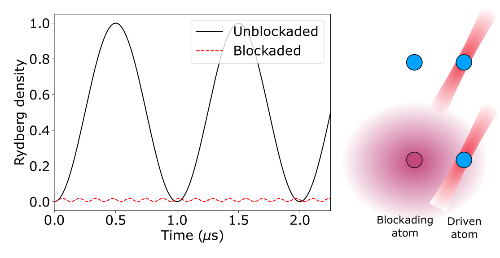
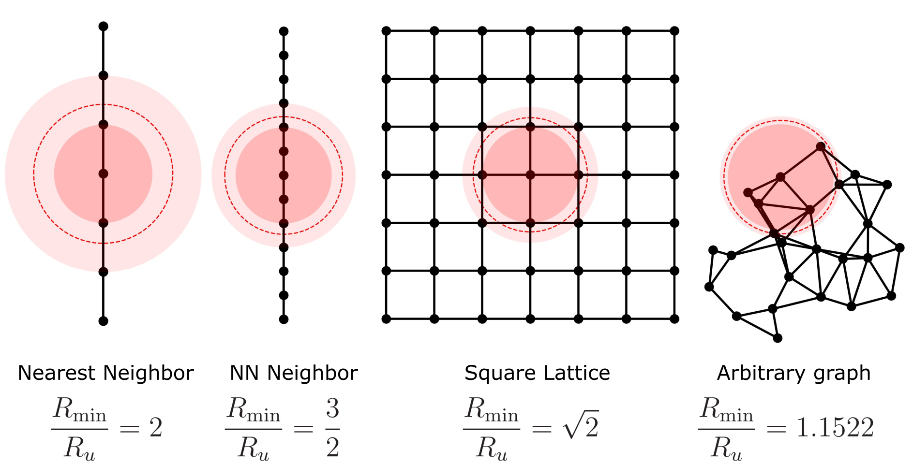

Rydberg Blockade
The Rydberg blockade mechanism is one of the most important phenomena of neutral atom quantum computing based on Rydberg interactions. By including a term in the effective Hamiltonian which adds an interaction between adjacent atoms in the Rydberg states, one can construct gates and nontrivial dynamics that create entanglement and correlation across the system.
The Rydberg interaction is a van der Waals interaction, where there is an energy shift if two adjacent atoms are both in the Rydberg state. The Van der Waals interaction is
\[V_{jk} = \frac{C_6}{|\overrightarrow{\mathbf{r}_j} - \overrightarrow{\mathbf{r}_k}|^6}\hat n_j \hat n_k,\]
where $\hat n_j=|r_j\rangle\langle r_j|$ is the number operator on the $j$th site, which is 1 if the atom is in the Rydberg state $| r_j \rangle$, and zero if the atom is in the ground state $| g_j \rangle$. The coefficient $C_6 = 2\pi\times 862690 \text{ MHz μm}^6$ is the interaction strength; characteristically, this interaction has a strength $C_6 \approx 2\pi\times 4$ MHz for two atoms separated by $7.74$ μm, a similar scale to the Rabi frequency coupling the ground and the Rydberg state. Crucially, this can be seen as an energy shift on atom $k$, conditional on the state of atom $j$, and so can be used, in a loose sense, as a conditional logical gate. This is because the adjacent atom forces the atom to be off-resonant with the laser field if it is in the Rydberg state. Please refer to the Hamiltonians page for descriptions of all the terms in the Rydberg Hamiltonian.
This conditional drive can be seen given the following dynamics. Suppose two atoms are close to each other ($< 10$ μm) and so experience a strong Rydberg interaction. The left atom is either in a Rydberg state, or in the ground state, and the right atom is originally in the ground state. Then, a Rabi drive is applied to the right atom, which couples the atom's ground state to the Rydberg state. For this example, we choose a Rabi frequency of $\Omega=2\pi\times 0.5$ MHz and distance between atoms $|\overrightarrow{\mathbf{r}_j} - \overrightarrow{\mathbf{r}_k}| = 7$ μm, which gives a conditional detuning (Rydberg interaction) of $\approx 2\pi \times 7.33$ MHz. When the left atom is in the ground state (black, top), there are no interactions and the state of the right atom experiences standard Rabi oscillation between the ground state and the Rydberg state; for a particular choice of timing, this executes a $\pi$ pulse, flipping the right atom from the ground to the Rydberg state. However, when the left atom is in the Rydberg state (red, bottom), there is a large detuning on the right atom due to the strong Rydberg interaction, which causes the transfer to the Rydberg state to be strongly suppressed. In this case, the right atom (up to perturbative corrections) is never in the Rydberg state. This is the so-called Rydberg blockade.

Because of the large energy shift from having two adjacent atoms in the Rydberg state, evolution from an atomic ground state with local Rabi couplings between ground and Rydberg is restricted to a low-energy subspace of states where no two adjacent atoms are in the Rydberg state. Furthermore, because the interaction strength with distance is a large power law, one can define a characteristic scale set by the Rabi frequency. If two atoms are close such that the conditional detuning is much larger than the Rabi frequency, one can consider the atoms to be blockading each other, and both atoms cannot simultaneously be in the Rydberg state. In contrast, if two atoms are far away, the two atoms never blockade each other and both atoms can simultaneously be in the Rydberg state.
Blockade radius $R_b$, subspace radius $R_s$, and unit disk graphs
The blockade radius is defined as the distance at which the Rydberg interaction energy is the same as the Rabi frequency
\[\frac{C_6}{R_b^6} = \Omega,\]
where $R_b$ is the blockade radius, which sets the characteristic distance scale for which Rydberg interaction will be strong compared to the coupling strength between the ground and the Rydberg state set by $\Omega$. In the above example, $\Omega = 2\pi\times 0.5$ MHz, so $R_b = (C_6 / \Omega)^{1/6} \approx 10.95$ μm. In practice, the blockade approximation, i.e., truncating the states that have both atoms in the Rydberg state, may not be a good approximation at the distance $R_b$, since it is more like the onset energy scale at which Rydberg interaction becomes strong. For a better blockade approximation, the atoms should be closer than $R_b$. We refer this distance as the subspace radius $R_s$ ($R_s \leq R_b$), at which we claim it will be a reasonably good approximation to throw away all the states that have more than one Rydberg states whenever they are within the radius $R_s$.
Therefore, in simulating the quantum dynamics, instead of doing it in the full $2^N$ Hilbert space, we may take advantage of the energy structure and truncate those blockade-violated states. Mathematically, this is related to the independent sets of the unit disk graph defined by the positions of the atoms. A unit disk graph is a set of vertices and edges, where each vertex represents an atom, and there are edges if the distance between vertices is less than or equal to some unit disk radius $|\overrightarrow{\mathbf{r}_j} - \overrightarrow{\mathbf{r}_k}| \leq R_u$. An independent set is a set of vertices in the graph such that no two of which are connected by an edge. Thus, the non-blockade-violated states are the independent set states of the corresponding unit disk graph, where the independent set consists of the vertices (atoms) that are excited to the Rydberg state. If we set $R_u = R_s$, it will be a good approximation to throw away those non-independent-sets. In practice, a priori, it may not be easy to know what will be a good choice for $R_s$, since it depends on the specific atom arrangement and the specific many-body quantum dynamics. For example, if $R_s = 1/2 * R_b$, we will be throwing away states that have interaction energies at least $2^6*\Omega$, which will typically be a very good approximation. In the two-atom example above, we can set $R_s = 7$ μm and throw away the state when both atoms are in the Rydberg state, which is quite good an approximation as seen in the figure. In this case, the Rydberg-blockaded state has an interaction of $(R_b / R_s)^6 \Omega \approx 14.7 \Omega$. When the blockade approximation is valid, the computational states would be separated into bands due to the strong Rydberg interaction, and there will be small perturbative coupling between the bands due to the Rabi coupling, (which is typically in the order of $(\Omega / V_{jk})^2$). See the illustrative figure below:

The lowest energy states are representative of independent sets of the unit disk graph, where Rydberg excitations are in the independent set and no two Rydberg excitations are within the unit disk radius. The second energy band are sets with a single independent set violation, where there are equivalently just two Rydberg excitations within the unit disk radius of each other. Higher and higher bands represent more and more independent set violations. We emphasize again that this band structure is dependent on the arrangement of atoms, and for arbitrary configurations, this band structure may not be clear.
To run more efficient simulation in the blockade subspace, the simplest scheme is to truncate the Hilbert space to the low-energy subspace, and exclude all states above a certain energy. Given the natural band structure of the classical Hamiltonian, we may simply truncate the Hilbert space to the subspace of independent sets of the unit disk graph with the unit disk radius set as $R_u = R_s$. Equivalently, this is the blockade subspace, where atoms within the subspace radius are excluded from both being in the Rydberg state. The validity of the energy truncation subspace is governed by the strength of off-diagonal matrix elements coupling the low-energy subspace to the high-energy one. For the Rydberg Hamiltonian, these off-diagonal elements $|1r\rangle\leftrightarrow|rr\rangle$ have a strength $\Omega$. In order to preserve dynamics within the subspace, the energy difference between states within the blockade subspace (e.g., $|1r\rangle$) and outside ($|rr\rangle$) must be much larger than the Rabi strength. Formally, if $\Omega \ll C_6/R_s^6$, then the blockade approximation should be valid (the perturbation is typically in the second order $(\Omega/ (C_6/R_s^6))^2$). As long as this condition holds, the exact dynamics in the full Hilbert space should be closely approximated by the approximate dynamics in the blockade subspace, as the mixing terms only couple to low-energy states.
Please also refer to the subspace page for more details on running simulation in the subspace. Also, see MIS tutorial for more descriptions on the correspondence between the independent set constraint and the blockade constraint, and a tutorial on how to solve the maximum independent set problem using Rydberg Hamiltonians.
Setting Atom Separation Distance from the Blockade Radius
Suppose given certain arrangement of atoms, we would like to have the close-by atoms to be mutually blockaded, while the far-away atoms to be non-blockaded. This corresponds to a unit disk graph and the distance scale can be set by the blockade radius $R_b$. For any two atoms within the unit disk radius $R_u$, the energy scale of having both in the Rydberg state must be much larger than $\Omega$; this sets a lower bound for $R_u$ compared to $R_b$. On the other hand, for any two atoms outside of the unit disk radius, the energy scale of having both be in the Rydberg state must be much smaller than $\Omega$, as the two atoms should not be blockaded; this sets an upper bound for $R_u$, as there are still $1/R^6$ interactions between nearby atoms which may "accidentally" blockade each other if $R_u$ is too large to include the supposedly unblockaded atoms. This upper bound on $R_u$ guarantees that dynamics occur within the correct independent set subspace and is not affected by long-range "Rydberg tails", which cause each independent set state to have a slightly different energy.
More specifically, we denote the lower bound as $R_\text{min}$, which is the minimum $R_u$ can be without removing any edges from the unit disk graph. Equivalently, it is the maximum distance between vertices that are connected by an edge. We denote the upper bound as $R_\text{max}$, which is the maximum $R_u$ can be without adding any additional edges to the unit disk graph. This is equivalently the minimum distance between vertices that are not connected by an edge in the unit disk graph. Therefore, we have $R_\text{min}\leq R_u < R_\text{max}$.
The actual scale for $R_\text{min}, R_u, R_\text{max}$ can be set by $R_b$. In order to fulfill the condition
\[ \frac{C_6}{R_\text{max}^6} \ll \Omega \equiv \frac{C_6}{R_b^6} \ll \frac{C_6}{R_\text{min}^6}\]
as much as possible, it's best to have
\[R_b = \sqrt{R_\text{min} R_\text{max}} = R_\text{min} * \sqrt{\frac{R_\text{max}}{R_\text{min}}} \quad \Rightarrow \quad R_\text{min} = R_b * \sqrt{\frac{R_\text{min}}{R_\text{max}}}.\]
Now, there are several characteristic distances. To summarize, we have:
$R_u$ is the unit disk radius of the graph. Usually, this is taken to be $R_u = R_\text{min}$, though generally $R_\text{min} \leq R_u < R_\text{max}$.
$R_\text{min}$ is the minimum $R_u$ can be without removing any edges from the unit disk graph.
$R_\text{max}$ is the maximum $R_u$ can be without adding any edges from the unit disk graph.
$R_b$ is the blockade radius of the system defined as $C_6/R_b^6 = \Omega$. It's preferable to scale $R_\text{min}$ and $R_\text{max}$ such that $R_b = \sqrt{R_\text{min} R_\text{max}}$.
$R_s$ is the subspace radius, at which it is a good approximation to truncate the Hilbert space when two Rydberg excitations are closer than $R_s$. We have $R_s \leq R_b$.
Note that $R_s$ is used only for faster simulation in the truncated blockade subspace. The smaller the $R_s$, the better the approximation for the simulation. When $R_s = 0$, one recovers the full-space simulation.
Below, we explain how to set the distance scale using a few example unit disk graphs.

In these examples in the above figure, $R_\text{min}$ is the radius of the dark-red disk, $R_\text{max}$ is the radius of the light-red disk, and $R_b$ is the radius of the red-dashed circle. The ratios $R_\text{max}/R_\text{min}$ are shown for several arrangements of atoms. For the 1D chain with nearest-neighbor blockade, let's say the lattice constant is $a$ with $R_\text{min} = a$ and $R_\text{max} = 2a$. So with $R_b = \sqrt{R_\text{min} R_\text{max}}$, we have $a = R_b/\sqrt{2}$. Therefore,
- For a given $\Omega = 2\pi \times 4$ MHz,
- $R_b = (C_6 / \Omega)^{1/6} \approx 7.74$ μm,
- $a = R_b /\sqrt{2} \approx 5.48$ μm.
Thus, for the $Z_2$ phase transition of the adiabatic example and in the 1D paper, it is good to set $a = 5.48$ μm. Similarly, one can compute that $a = 3.16$ μm and $a = 2.24$ μm will be good choices for observing $Z_3$ and $Z_4$ phase transitions in the 1D chain. For the 2D square lattice, $a = 6.51$ μm and $a = 4.60$ μm are good options for observing the checkerboard phase (nearest-neighbor blockade) and the striated phase (next-nearest-neighbor blockade) as in this paper, following the same rationale as above. Here, we summarize the recommended lattice constants (unit μm) for common lattices in the following table:
| $R_\text{min}$ | $R_\text{max}$ | $a$ for $\Omega = 2\pi * 4$ MHz | $a$ for $\Omega = 2\pi * 10$ MHz | |
|---|---|---|---|---|
| Chain $Z_2$ | $a$ | $2a$ | 5.48 | 4.70 |
| Chain $Z_3$ | $2a$ | $3a$ | 3.16 | 2.71 |
| Chain $Z_4$ | $3a$ | $4a$ | 2.24 | 1.92 |
| Square checkerboard | $a$ | $\sqrt{2}a$ | 6.51 | 5.59 |
| Square striated | $\sqrt{2}a$ | $2a$ | 4.60 | 3.95 |
| Square star | $2a$ | $\sqrt{5}a$ | 3.66 | 3.14 |
| Lieb NN | $a$ | $2a$ | 5.48 | 4.70 |
| Lieb NNN | $2a$ | $\sqrt{5}a$ | 3.66 | 3.14 |
| Lieb NNNN | $\sqrt{5}a$ | $\sqrt{8}a$ | 3.08 | 2.64 |
| Triangular NN | $a$ | $\sqrt{3}a$ | 5.88 | 5.05 |
| Triangular NNN | $\sqrt{3}a$ | $2a$ | 4.16 | 3.57 |
| Honeycomb NN | $a$ | $\sqrt{3}a$ | 5.88 | 5.05 |
| Honeycomb NNN | $\sqrt{3}a$ | $2a$ | 4.16 | 3.57 |
| Kagome NN | $a$ | $\sqrt{3}a$ | 5.88 | 5.05 |
| Kagome NNN | $\sqrt{3}a$ | $2a$ | 4.16 | 3.57 |
Other than regular lattices, for an example arbitrary graph shown in the right most panel of the above figure, one only has $R_\text{max}/R_\text{min} \approx 1.15$. Thus, there is only a small window to set the unit disk radius, and the energy scale for the blockaded versus non-blockaded Rydberg interaction is not as large ($1.15^6 \approx 2.34$). Thus, the blockade approximation for the atoms with a separation close to the blockade radius will not be as good. For accurate simulation of the actual Rydberg dynamics, one should take a subspace radius $R_s \ll R_\text{min}$. Therefore, we can see that graphs on a regular lattice typically have larger and better energy separation between the blockaded and the non-blockaded states than arbitrary graphs.
Below, we give an example of doing the simulation in the blockade subspace for a ring system. For more information on subspace emulation, please refer to the subspace page.
Example Dynamics in the Blockade Subspace
To emphasize the effectiveness of the subspace emulation, some example nonequilibrium dynamics are shown below, for a ring of $12$ atoms seperated by $R_\text{min} = 6.9$ μm. The minimum distance of atoms not within the blockade radius is $R_\text{max} \approx 13.33$ μm (next-nearest neighbor separation), Thus, the blockade radius can be $R_b = 6.9 \times \sqrt{13.33/6.9} \approx 9.59$ μm. This blockade energy scale corresponds to $\Omega \approx 2\pi * 1.11$ MHz, and the perturbative limits to be $\Omega \ll C_6/R_\text{min} \approx 7.99$ MHz and $\Omega \gg C_6/R_\text{max} \approx 0.15$ MHz.
Note that in this example, we set the blockade radius from $R_\text{min}$ and $R_\text{max}$, and then obtain Rabi frequency $\Omega$ from the blockade radius. In practice, it's often the opposite order for specification on the hardware. $\Omega$ is typically limited by the laser power on the hardware. Thus, one starts from a given $\Omega$, which determines the blockade radius, $R_b$, which can then inform the separation between atoms as described in the previous section. If one starts from the atom separation distance first, it may often results in a Rabi frequency that is too large or too small to be feasible on the neutral-atom hardware.
The set of atoms for this ring example can be defined by:
using Bloqade
nsites = 12; # 12-site ring
unit_disk_radius = 6.9 # Distance between nearest-neighbor atoms, in microns; R_min
R = unit_disk_radius / (2 * sin(2 * pi / (nsites) / 2)) # Radius of the circle, using a little trigonometry; it is also the next-nearest neighbor distance, R_max.
pos = [(R * sin(i * 2 * pi / (nsites)), R * cos(i * 2 * pi / (nsites))) for i in 1:nsites] # Positions of each atom
atoms = AtomList(pos); # Define the atom positions as an AtomList.
blockade_radius = sqrt(unit_disk_radius * R); # R_b = \sqrt{R_min R_max}The system is driven by a constant Rabi drive, which couples each atom's ground and Rydberg state. The Hamiltonian can be defined in Bloqade with:
C6 = 2π * 862690;
Ω = C6 / blockade_radius^6
h = rydberg_h(atoms; Ω = Ω);The system is then initialized into the ground state of all atoms, which is the lowest energy of the classical Hamiltonian. We have two choices of basis: the first choice is the full Hilbert space of $2^{12}$ elements, whereas the second basis is the blockade subspace, which excludes Rydberg excitations within the subspace radius, $R_s$. In principle, the subspace radius can be taken to be any value less than the blockade radius, but for better approximation, it is better to take smaller $R_s$. Typically, $R_s < R_b / 1.7$ will be reasonably good approximation, since states with Rydberg interaction $1.7^6 \Omega \approx 24 \Omega$ will be then truncated, and the perturbative truncation error is typically in second order. For $R_s = 0$, no states are excluded and one recovers the exact dynamics. For a subspace radius anywhere between $R_\text{min}$ and $R_\text{max}$, the subspace is the same, as there are no vertices having a separation within those radii. Here, we choose the subspace radius for the ring of atoms to be the unit disk radius, which corresponds to truncating the states having a Rydberg interaction $>(R_b/R_u)^6 \Omega \approx 7.2 \Omega$. For more general graphs, it may be reasonable to choose the subspace radius to be smaller than the unit disk radius and include extra states to improve the fidelity of the energy truncation. For example, for the next-nearest-neighbor line, it may be reasonable to choose the subspace radius to be half the blockade radius, which includes high-energy NNN blockaded states to improve numerical accuracy. See the subspace page for more details.
subspace_radius = unit_disk_radius # R_s
init_state = zero_state(nsites) # Define the initial state in the full space.
space = blockade_subspace(atoms, subspace_radius) # Compute the blockade subspace with R_s.
init_state2 = zero_state(space); # Define the initial state in the blockade subspace.The blockade subspace has $D=322$ elements, which is much smaller than $2^{12}$, so the emulation will be much faster. If the atoms were far apart and non-interacting, each atom would oscillate completely between its ground state and Rydberg state with a period of $\approx 0.5$ μs. However, because adjacent atoms shift to the Rydberg state concurrently, they are dynamically blockaded, causing the maximum Rydberg density to only be $1/2$, corresponding to an antiferromagnetic $Z_2$ state. Note that because the ring has a translation symmetry, the Rydberg density is equal on all sites.
Tmax = 6.0
nsteps = 2001
times = LinRange(0, Tmax, nsteps)
dt = Tmax / (nsteps - 1)
prob = SchrodingerProblem(init_state, Tmax, h, dt = dt, adaptive = false);
integrator = init(prob, Vern8());
densities = [] # Time evolve the system in the full space
for _ in TimeChoiceIterator(integrator, 0.0:dt:Tmax)
push!(densities, rydberg_density(init_state, 1))
end
prob2 = SchrodingerProblem(init_state2, Tmax, h, dt = dt, adaptive = false);
integrator2 = init(prob2, Vern8());
densities2 = [] # Time evolve the system in the subspace
for _ in TimeChoiceIterator(integrator2, 0.0:dt:Tmax)
push!(densities2, rydberg_density(init_state2, 1))
endPlot the data:
using PythonCall # Use matplotlib to generate plots
matplotlib = pyimport("matplotlib")
plt = pyimport("matplotlib.pyplot")
ax = plt.subplot(1, 1, 1)
plt.plot(times, real(densities), "k", label = "Full space")
plt.plot(times, real(densities2), "r--", label = "Subspace")
ax.axis([0, Tmax, 0, 0.45])
plt.xlabel("Time (us)")
plt.ylabel("Rydberg density")
plt.tight_layout()
plt.legend()
inset_axes = pyimport("mpl_toolkits.axes_grid1.inset_locator")
ax2 = inset_axes.inset_axes(ax, width = "20%", height = "30%", loc = "lower right", borderpad = 1)
plt.plot(times, real(densities - densities2))
plt.axis([0, 0.5, -0.001, 0.003])
plt.ylabel("Difference", fontsize = 12)
plt.yticks(LinRange(-0.001, 0.003, 5), fontsize = 12);
plt.xticks([0, 0.2, 0.4, 0.6], fontsize = 12);
Data for this evolution is shown above, where exact evolution in the full space is shown in black, and the truncated evolution in the subspace is shown by red dashed. It is clear that even though the Hilbert space is $12\times$ smaller, the dynamics are faithfully reproduced, up to high frequency oscillations (inset) from adjacent atoms in the Rydberg state, similar to the high frequency oscillations of the 2-atom conditional blockade example above. However, at longer times, this subspace approximation fails to reproduce the full space (shown by divergence between black and red dashed), as the perturbative effects become relevant over longer timescales.
This page was generated using Literate.jl.